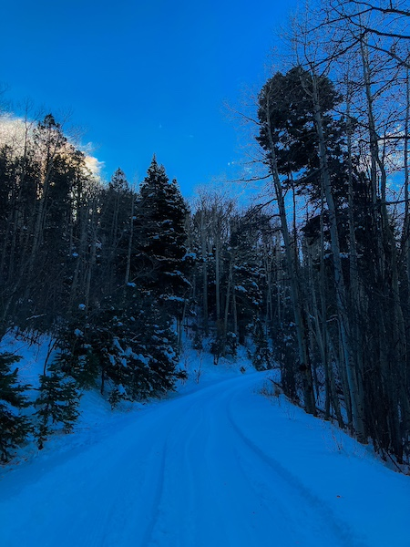
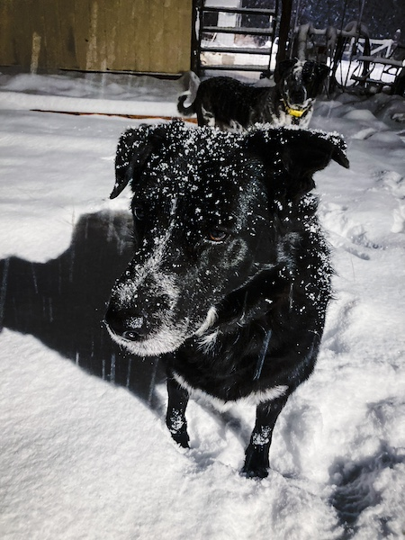
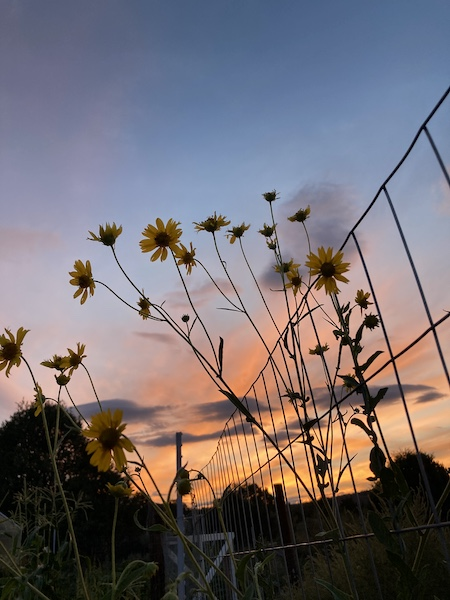
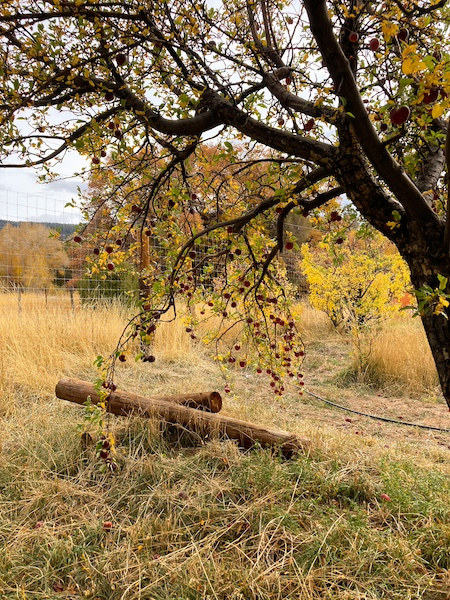
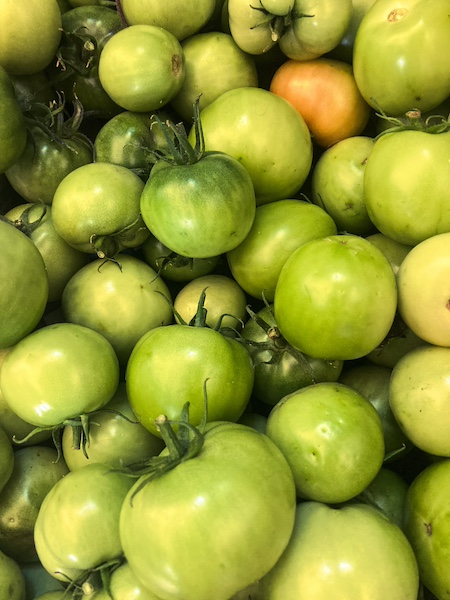
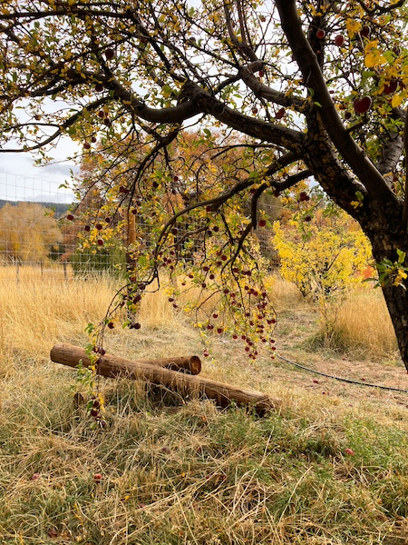
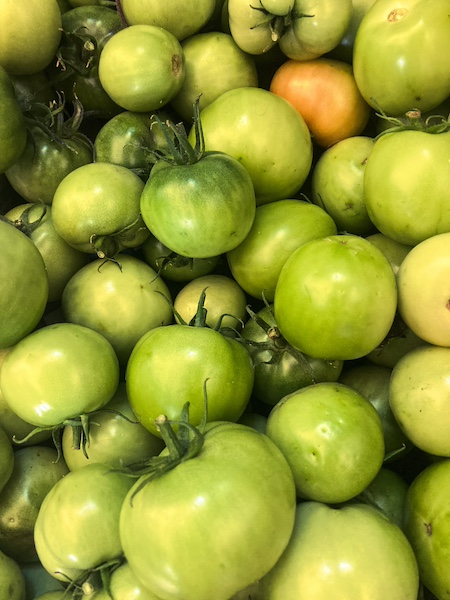

Hello again and welcome to my portfolio page. Here you will find examples of blogs I have written, projects I have worked on, pictures I have taken, and other similar works. Some of these were done for university projects throughout the years, while some have been for personal entertainment as a hobby.
Primarily, I am a writer. I specialize in strategic and communicative writing, but have quite a bit of practice in creative writing. As a strategic writer, I have worked on a handful of social media and marketing campaigns. Below you will find some practice examples I have done for classes. In addition, I recently worked on a successful school board election campaign which I unfortunately cannot share here. Creative writing is much more of a hobby, but I believe all writing requires some elements of creativity. For years, I have blended the two skills to adapt to different markets, events, and products the same way I would adapt to new genres.
My design skills are a new development relative to writing, but I have taken a handful of courses in my time at the University of New Mexico that required me to brand fictional businesses for practice. You will find examples of those below as well. I have adequate practice using Adobe Photoshop, Adobe Illustrator, Adobe Dimension, and am still in the process of learning Adobe Dreamweaver.
Photography is not something I consider one of my major skills, but in the age of smartphones, I believe everyone is a photographer to some degree. Below I have included some shots taken on my iPhone SE.
   
 